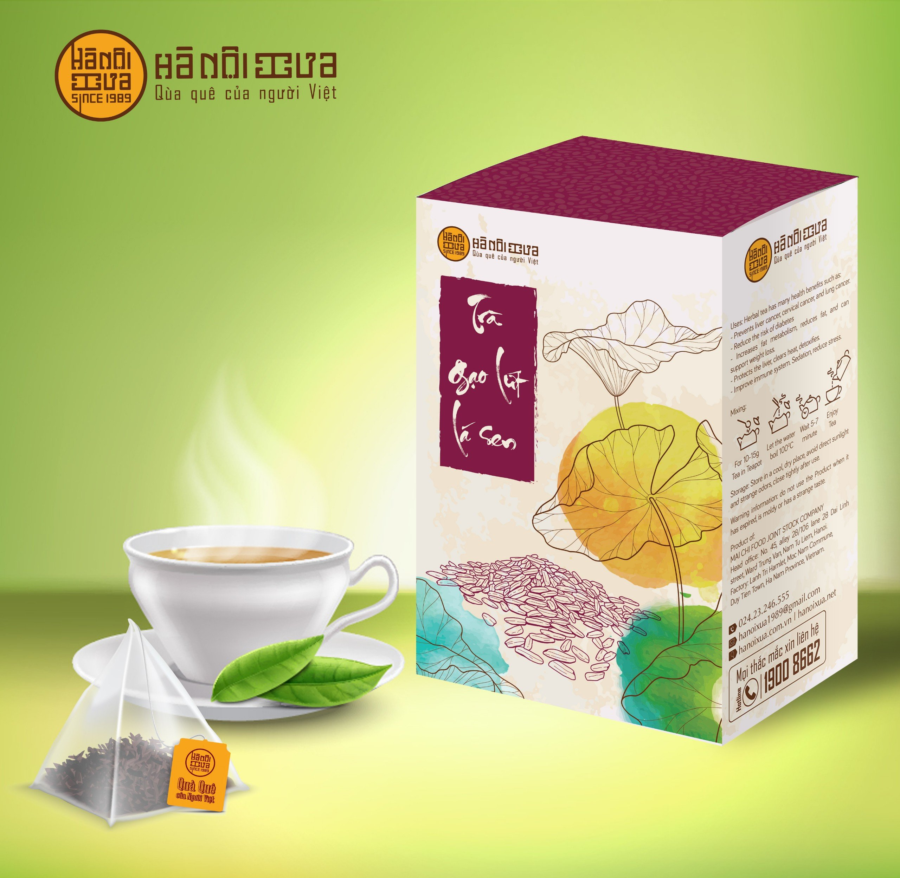
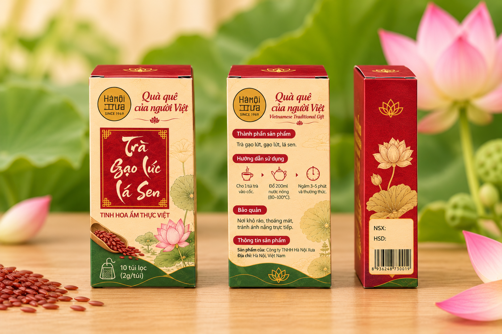
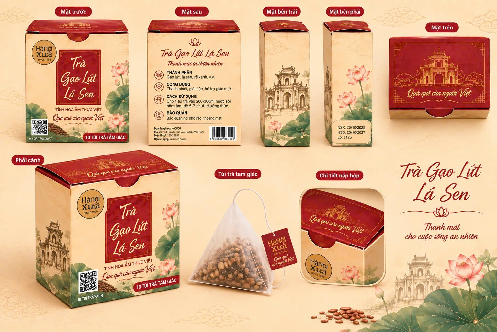
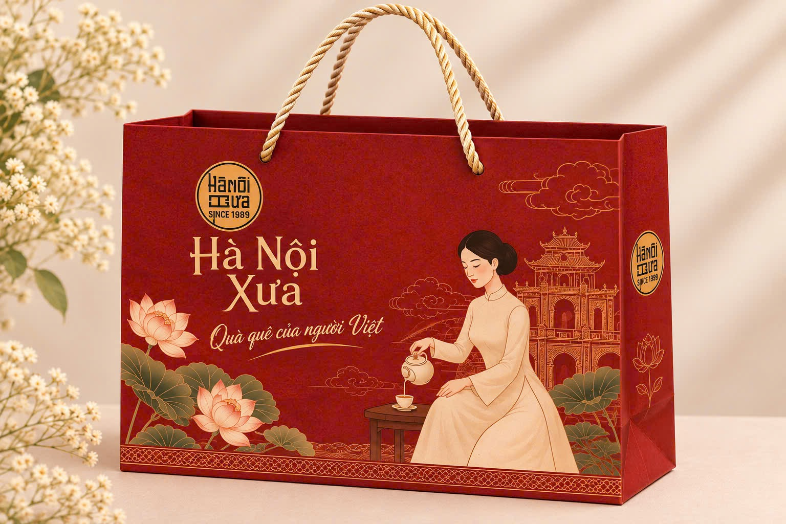
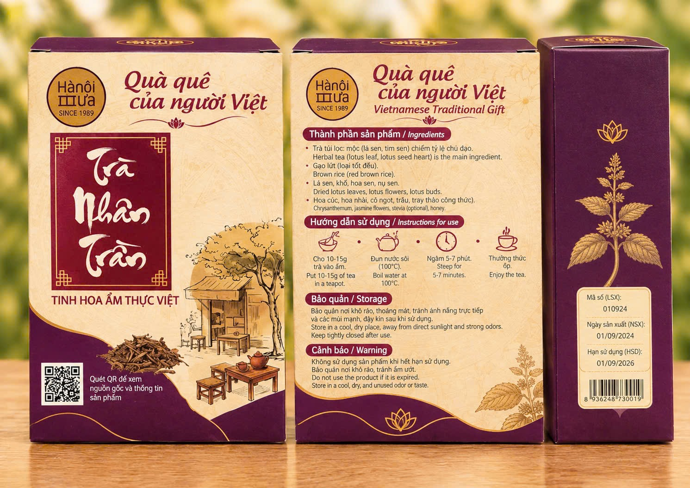
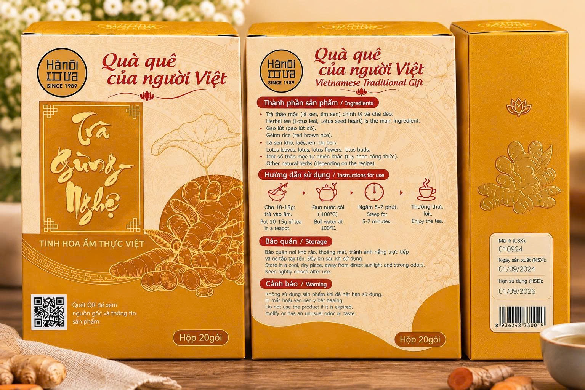

Đỏ Đô
Đại diện cho vẻ đẹp cổ kính, trang trọng của phố cổ.

Bao bì cũ Bao bì mới
Bao bì mới
Đại diện cho vẻ đẹp cổ kính, trang trọng của phố cổ.
Tạo cảm giác thanh lịch, hoài niệm.
Tôn vinh nét mộc mạc của nông sản làng quê.
Gợi nhớ màu mùa gặt, tôn vinh giá trị hạt gạo và thảo mộc quê hương.
Hộp đựng dạng khối chữ nhật bằng giấy bìa cứng cao cấp, vuông vức và chịu lực tốt giúp bảo vệ túi trà tránh bị móp méo hay biến dạng khi vận chuyển. Bề mặt hộp phủ lớp màng chống ẩm mốc, kết hợp thiết kế nắp gập kín đáo giúp cách ly sản phẩm khỏi không khí và độ ẩm, giữ nguyên vẹn chất lượng cùng hương vị trà bên trong.
Trà bên trong được đựng trong túi lọc kim tự tháp (3D) bằng chất liệu lưới màng sinh học an toàn, chịu nhiệt cao. Cấu trúc không gian 3D rộng rãi tạo điều kiện cho các nguyên liệu gạo lứt, lá sen nở đều và giải phóng tối đa hương vị khi pha, đi kèm dây đính tem tiện lợi và vệ sinh cho người sử dụng.

Việc thiết kế bao bì Trà Gạo Lứt Lá Sen của thương hiệu Hà Nội Xưa theo dạng hộp nhỏ xuất phát từ mong muốn tạo ra một phiên bản sản phẩm dành riêng cho những khách hàng muốn trải nghiệm và tìm hiểu sản phẩm trước khi quyết định mua hộp trà có quy cách lớn hơn.

Combo quà tặng Trà Gạo Lứt Lá Sen của thương hiệu Hà Nội Xưa được thiết kế theo phong cách truyền thống kết hợp hiện đại, lấy cảm hứng từ nét đẹp văn hóa Hà Nội và hình ảnh thiên nhiên Việt Nam. Thiết kế hướng đến sự thanh lịch, sang trọng nhưng vẫn gần gũi, mộc mạc, qua đó thể hiện giá trị của một món quà mang đậm bản sắc Việt.
Combo sử dụng hai gam màu chủ đạo là đỏ đô và vàng kem. Màu đỏ đô được thể hiện trên phần nắp hộp và các chi tiết trang trí, tạo cảm giác sang trọng, trang trọng, phù hợp với sản phẩm quà tặng. Trong khi đó, màu vàng kem làm nền giúp tổng thể trở nên nhẹ nhàng, ấm áp và gợi liên tưởng đến nét đẹp cổ kính của Hà Nội xưa.
Các họa tiết hoa sen, lá sen, hạt gạo lứt và hình ảnh kiến trúc cổ được kết hợp hài hòa, tạo nên một tổng thể thống nhất, vừa mang giá trị thẩm mỹ vừa truyền tải câu chuyện văn hóa Việt Nam.
Hộp trà được thiết kế với kiểu dáng hình hộp chữ nhật đứng, có kích thước nhỏ gọn, thuận tiện cho việc bảo quản và làm quà biếu. Phần nắp hộp sử dụng màu đỏ đô nổi bật, kết hợp với các đường viền trang trí màu vàng ánh kim, tạo điểm nhấn sang trọng.
Túi trà được thiết kế theo dạng hình kim tự tháp tam giác, sử dụng chất liệu túi lọc trong suốt, giúp người dùng có thể quan sát được nguyên liệu bên trong. Kiểu dáng này tạo cảm giác hiện đại, tiện lợi và khác biệt so với các loại túi trà truyền thống.
Bên cạnh đó, túi trà được kết hợp với dây treo và thẻ giấy nhỏ mang logo Hà Nội Xưa cùng thông điệp thương hiệu. Chi tiết này giúp tăng khả năng nhận diện sản phẩm, đồng thời tạo sự đồng bộ giữa túi trà và hộp đựng bên ngoài.
Phần bên trong hộp được thiết kế theo hướng tối giản nhưng vẫn giữ được sự đồng nhất với phong cách bên ngoài. Nắp hộp mở dạng gập, kết hợp phần tai cài giúp đóng mở thuận tiện. Cách thiết kế này không chỉ giúp bảo vệ sản phẩm mà còn tạo cảm giác chỉn chu khi người nhận mở hộp quà.
Tổng thể thiết kế combo quà tặng hướng đến việc kết hợp giá trị sử dụng với giá trị văn hóa và tinh thần. Hình ảnh hoa sen đại diện cho vẻ đẹp thanh cao, thuần khiết của người Việt; hình ảnh kiến trúc cổ gợi nhắc nét đẹp Hà Nội truyền thống; còn gam màu đỏ đô và vàng kem thể hiện sự trang trọng, ấm áp.
Thông qua sự kết hợp giữa hộp trà, túi trà tam giác và các chi tiết nhận diện thương hiệu, combo không chỉ đơn thuần là một sản phẩm trà mà còn trở thành món quà mang thông điệp “Quà quê của người Việt”, thể hiện sự trân trọng đối với những giá trị truyền thống và góp phần quảng bá văn hóa Việt Nam đến người tiêu dùng.
Bên cạnh hộp đựng Trà Gạo Lứt Lá Sen, sản phẩm còn được thiết kế thêm túi giấy quà tặng mang phong cách đồng bộ với bao bì chính. Túi sử dụng gam màu đỏ đô làm chủ đạo, kết hợp với các họa tiết màu vàng kem, tạo nên vẻ ngoài sang trọng, tinh tế và mang đậm dấu ấn văn hóa truyền thống Việt Nam.




